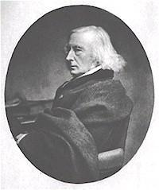
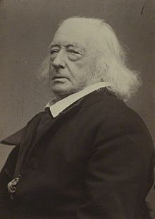

|
|
颂主新歌 |
|
1 Angels holy, high and lowly, |
1.圣哉天使，赞美吟诗，欢乐讴歌颂至尊！ |
|
|
|
|
|
|


https://youtu.be/aErK0zEFg5Y - Angels Holy, High and Lowly (Angels Holy)
https://youtu.be/Pu-3qH3HaAo
| Text: | Angels Holy, High and Lowly |
| Author: | John S. Blackie |
| Tune: | WINDERMERE |
| Composer: | Frederick C. Maker |
| Short Name: | John S. Blackie |
| Full Name: | Blackie, John Stuart, 1809-1895 |
| Birth Year: | 1809 |
| Death Year: | 1895 |
Blackie, John Stuart, LL.D.,

born at Glasgow, July, 1809, and educated at Marischal College, Aberdeen, and at the University of Edinburgh. After a residence on the Continent for educational purposes, he was called to the Bar in 1834. In 1841, he was appointed Professor of Latin in Marischal College, Aberdeen, and in 1850 Professor of Greek in the University of Edinburgh. On the death of Dr. Guthrie he was for some time the Editor of the Sunday Magazine. His published works include:— A Metrical Translation of AEschylus, 1850; Pronunciation of Greek, 1852; Lyrical Poems, 1860; Homer and the Iliad, 4 vols., 1869, &c.; Lays and Legends of Ancient Greece, &c, 1857; and Songs of Religion and Life, 1876. To the hymnological student he is known by his rendering of a portion of the Benedicite (q.v.), "Angels, holy, high and lowly," which is found in several hymnals.
-- John Julian, Dictionary of Hymnology (1907)
Tune Information
| Title: | WINDERMERE (Maker) |
| Composer: | Frederick C. Maker |
| Meter: | 8.7.8.8.7 |
| Incipit: | 32345 54345 66556 |
| Short Name: | Frederick C. Maker |
| Full Name: | Maker, Frederick C. (Frederick Charles), 1844-1927 |
| Birth Year: | 1844 |
| Death Year: | 1927 |
Frederick C. Maker (b. Bristol, England, August 6, 1844; d. January 1, 1927) received his early musical training as a chorister at Bristol Cathedral, England. He pursued a career as organist and choirmaster—most of it spent in Methodist and Congregational churches in Bristol. His longest tenure was at Redland Park Congregational Church, where he was organist from 1882-1910. Maker also conducted the Bristol Free Church Choir Association and was a long-time visiting professor of music at Clifton College. He wrote hymn tunes, anthems, and a cantata, Moses in the Bulrushes.
Bert Polman
John Stuart Blackie 1809 –1895 Scottish
|
John Stuart Blackie
|
|
|---|---|
|

John Stuart Blackie, by Elliott
& Fry, Albumen Cabinet Card, 1870s.
|
|
| Born |
28 July 1809 |
| Died |
2 March 1895 (aged 85)
Edinburgh, Scotland
|
| Nationality | Scottish |
| Occupation | scholar, intellectual |
| Signature | |
|
|
|


John Stuart Blackie FRSE (28 July 1809 – 2 March 1895) was a Scottish scholar and man of letters.
Biography[edit]
He was born in Glasgow, on Charlotte Street, the son of Kelso-born banker Alexander Blackie (d.1846) and Helen Stodart.[1][2] He was educated at the New Academy and afterwards at the Marischal College, in Aberdeen, where his father was manager of the Commercial Bank.
After attending classes at Edinburgh University (1825–1826), Blackie spent three years at Aberdeen as a student of theology. In 1829 he went to Germany, and after studying at Göttingen and Berlin (where he came under the influence of Heeren, Müller, Schleiermacher, Neander and Böckh) he accompanied Bunsen to Italy and Rome. The years spent abroad extinguished his former wish to enter the Church, and at his father's desire he gave himself up to the study of law.
He had already, in 1824, been placed in a lawyer's office, but only remained there six months. By the time he was admitted a member of the Faculty of Advocates (1834) he had acquired a strong love of the classics and a taste for letters in general. A translation of Goethe's Faust, which he published in 1834, met with considerable success, winning the approbation of Carlyle. After a year or two of desultory literary work he was (May 1839) appointed to the newly instituted chair of Humanity (Latin) in the Marischal College.
Difficulties arose in the way of his installation, owing to the action of the Presbytery on his refusing to sign unreservedly the Confession of Faith; but these were eventually overcome, and he took up his duties as professor in November 1841. In the following year he married. From the first his professorial lectures were conspicuous for the unconventional enthusiasm with which he endeavoured to revivify the study of the classics; and his growing reputation, added to the attention excited by a translation of Aeschylus which he published in 1850, led to his appointment in 1852 to the professorship of Greek at Edinburgh University, in succession to George Dunbar, a post which he continued to hold for thirty years.
He was somewhat erratic in his methods, but his lectures were a triumph of influential personality. A journey to Greece in 1853 prompted his essay On the Living Language of the Greeks, a favorite theme of his, especially in his later years; he adopted for himself a modern Greek pronunciation, and before his death he endowed a travelling scholarship to enable students to learn Greek at Athens.
Scottish nationality was another source of enthusiasm with him; and in this connection he displayed real sympathy with highland home life and the grievances of the crofters. The foundation of the Celtic chair at Edinburgh University was mainly due to his efforts. In spite of the many calls upon his time he produced a considerable amount of literary work, usually on classical or Scottish subjects, including some poems and songs of no mean order.
Blackie was a Radical and Scottish nationalist in politics, of a fearlessly independent type; possessed of great conversational powers and general versatility, his picturesque eccentricity made him one of the characters of the Edinburgh of the day, and a well-known figure as be went about in his plaid, worn shepherd-wise, over one shoulder and under the other, wearing a broad-brimmed hat, and carrying a big stick.
In the 1880s and 1890s, he lectured at Oxford on the pronunciation of Greek, and corresponded on the subject with William Hardie. In May 1893, he gave his last lecture at Oxford, but afterwards admitted defeat, stating: "It is utterly in vain here to talk reasonably in the matter of Latin or Greek pronunciation: they are case-hardened in ignorance, prejudice and pedantry".[3]
He died at 9 Douglas Crescent[1] in Edinburgh.[4] He is buried in Dean Cemetery to the north side of the central path in the north section of the original cemetery. His nephew and biographer, Archibald Stodart Walker (1869-1934) is buried with him.
In 1895 a plaque, designed by Robert Lorimer was erected to his memory in St Giles Cathedral.[5]
Publications[edit]
All printed by David Douglas.
- Lyrical Poems (1860)
- Lays of the Highlands and Islands (1872)
- Horae Hellenicae (1874)
- On Self-Culture, Intellectual, Physical and Moral (1874)
- The Wise Men of Greece (1877)
- The Wisdom of Goethe (1883)[6]
- A Song of Heroes (1890)[7]
Family[edit]
Blackie married Elizabeth (known as Eliza) Wyld in 1842. They had no children. She is buried with him.[1]
He was the uncle of Sir Alexander Kennedy.
Gallery[edit]


{kind=link}
{kind=link}
{kind=link}
{kind=link}
{kind=link}
{kind=link}
{kind=link}
{kind=link}
{kind=link}
{kind=link}
{kind=link}
{kind=link}
Works[edit]
The hymn he wrote on his honeymoon, "Angels holy, high and lowly," has been called his most enduring work.[8]
- Education in Scotland: An Appeal to the Scottish People, on the Improvement of their Scholastic and Academical Institutions, W. Tait, 1846.
- The Pronunciation of Greek: Accent and Quantity, a Philological Inquiry, Sutherland & Knox, 1852.
- Classical Literature in its Relation to the Nineteenth Century and Scottish University Education, Sutherland and Knox, 1852.
- On Beauty: Three Discourses Delivered in the University of Edinburgh, Sutherland and Knox, 1858.
- Homer and the Iliad, Vol. 2, Vol. 3, Vol. 4, Edmonston & Douglas, 1866 [maintaining the unity of the poems. For further information, see the section on Blackie in English translations of Homer].
- War Songs of the Germans, Edmonston and Douglas, 1870.
- Four Phases of Morals: Socrates, Aristotle, Christianity, Utilitarianism, Edmonston and Douglas, 1871.
- On Self-Culture, Edmonston & Douglas, 1874 [particularly recommended by James Wood].[9]
- Horae Hellenicæ, Essays and Discussion on Some Important Points of Greek Philology and Antiquity, Macmillan & Co., 1874.
- Four Phases of Morals: Socrates, Aristotle, Christianity, Utilitarianism, Edmonston and Douglas, 1874.
- The Language and Literature of the Scottish Highlands, Edmonston and Douglas, 1876.
- Songs of Religion and Life, Scribner, Armstrong & Co., 1876.
- The Natural History of Atheism, Scribner, Armstrong & Company, 1878 [1st Pub. 1877].
- The Wise Men of Greece, Macmillan and Company, 1877.
- Lays and Legends of Ancient Greece, William Blackwood & Sons, 1880.
- Faust: A Tragedy, Macmillan & Co., 1880 [second ed.].
- Lay Sermons Charles Scribner's Sons, 1881.
- Altavona; Fact and Fiction From my Life in the Highlands, D. Douglas, 1882.
- The Wisdom of Goethe, William Blackwood & Sons, 1883.
- The Scottish Highlanders and the Land Laws, Chapman and Hall, 1885.
- What does History Teach?: Two Edinburgh Lectures, Macmillan and Co., 1886.
- Life of Robert Burns, Walter Scott, 1888.
- Scottish Song: its Wealth, Wisdom, and Social Significance, W. Blackwood and Sons, 1889.
- A Song of Heroes, William Blackwood & Sons, 1890.
- Essays on Subjects of Moral and Social Interest, David Douglas, 1890.
- Christianity and the Ideal of Humanity, David Douglas, 1893.
Amongst his political writings, may be mentioned:
- On Democracy, Edmonston & Douglas, 1867.[10]
- The Constitutional Association on Forms of Government: A Historical Review and Estimate of the Growth of the Principal Types of Political Organism in Europe, Edmonston and Douglas, 1867.
- Political Tracts, 1868.
https://en.wikipedia.org/wiki/John_Stuart_Blackie